Attendance · feature and screenshot audit
11 October 2026 · Actual application components with synthetic sample
data.
The student view shown here is in Admin. The separate student
app is missing from this checkout.

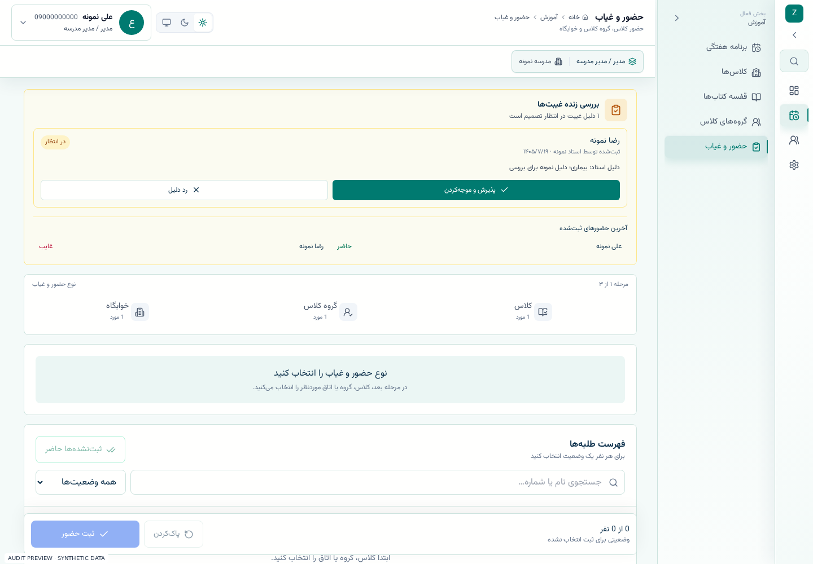

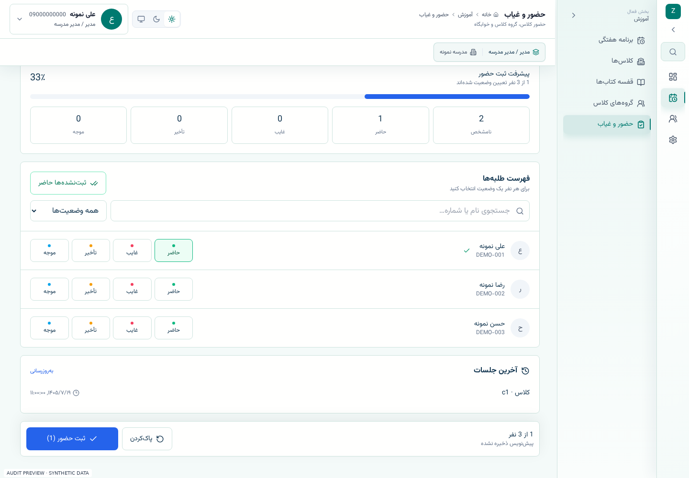

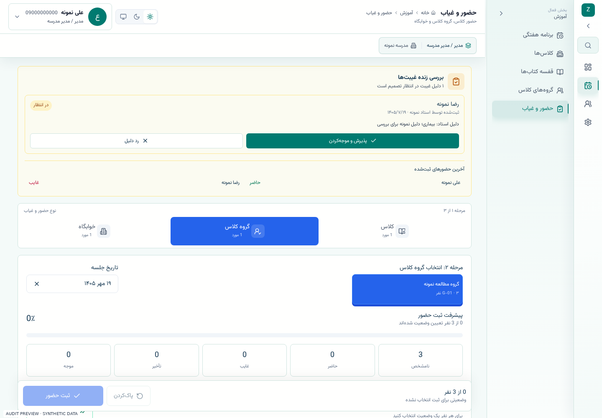

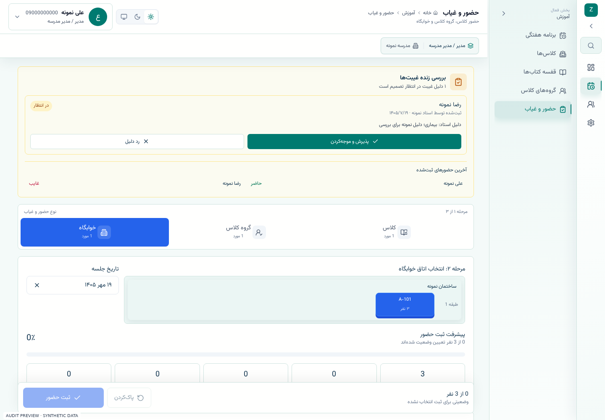

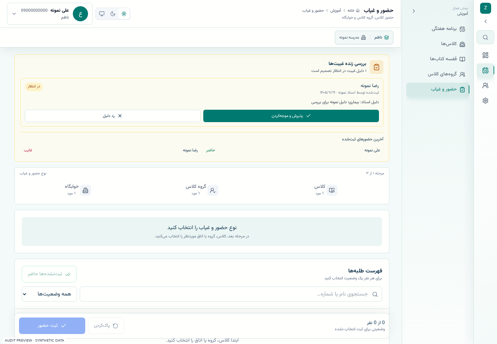

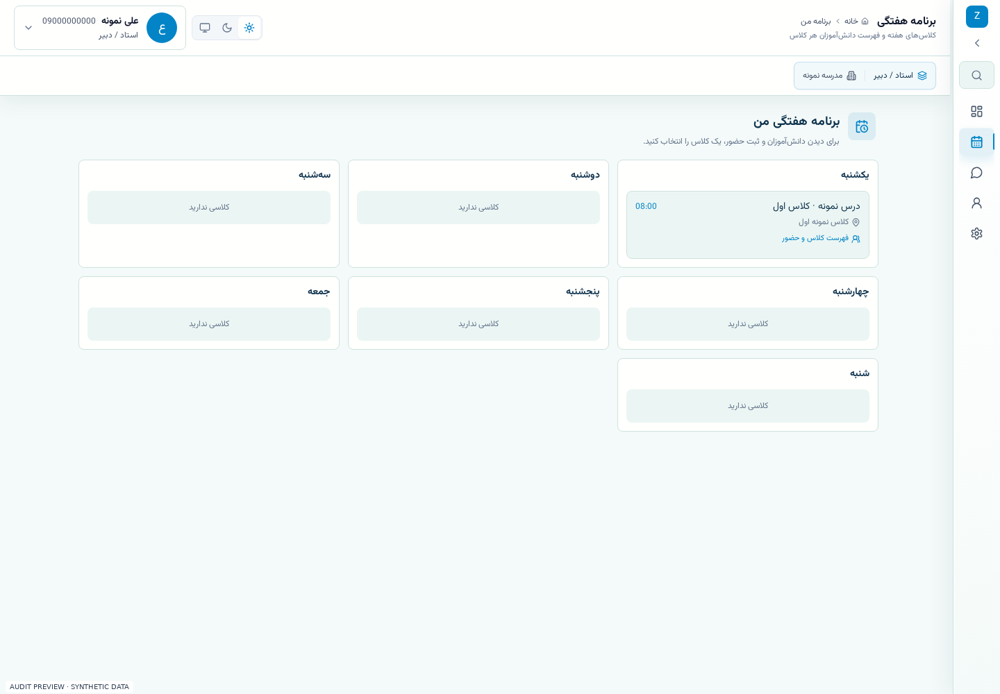

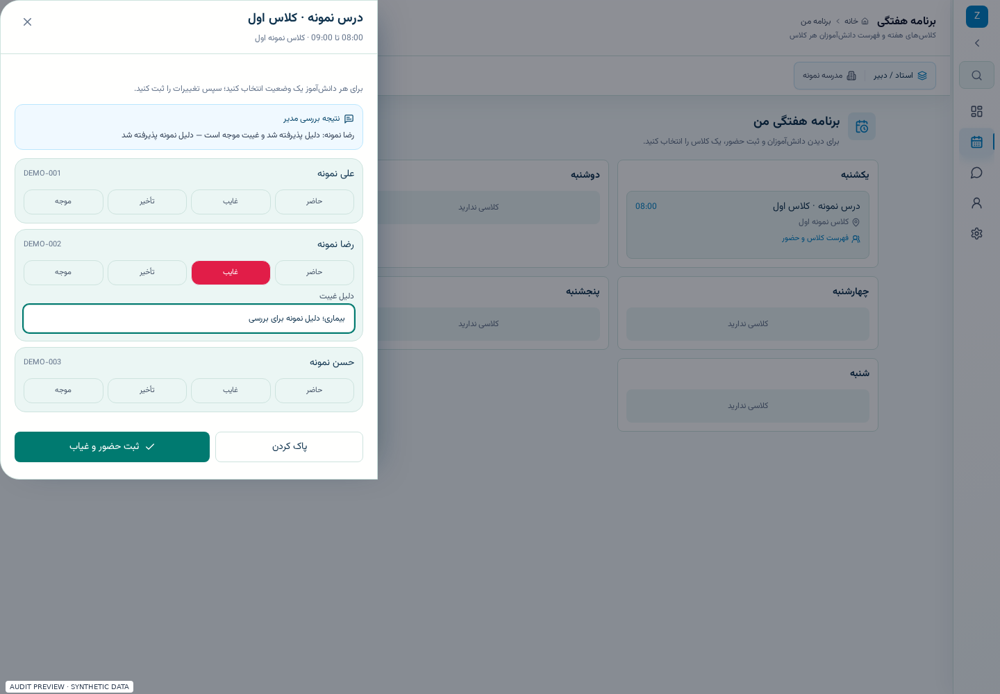

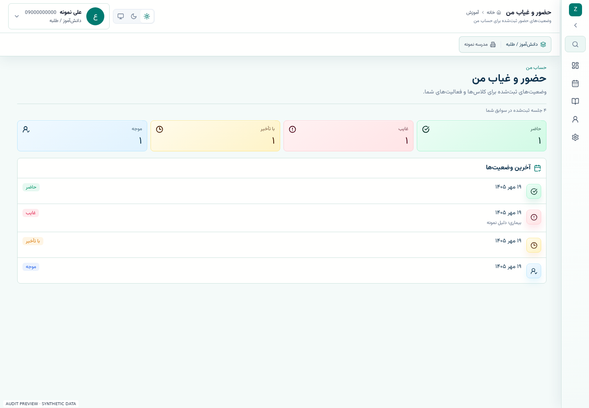

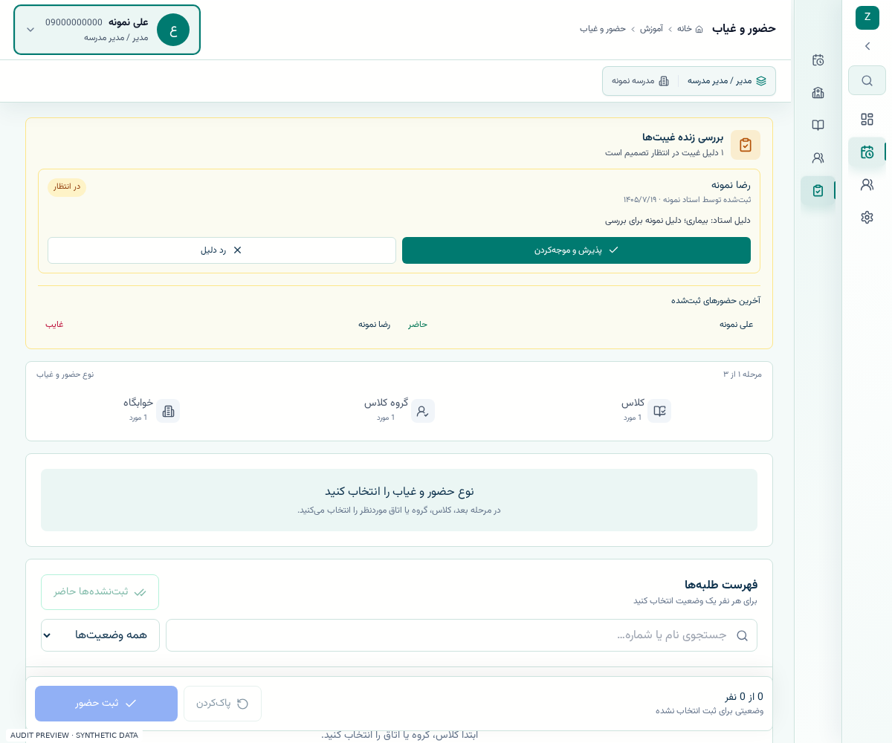

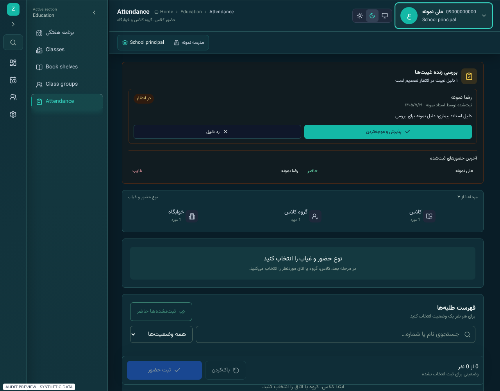

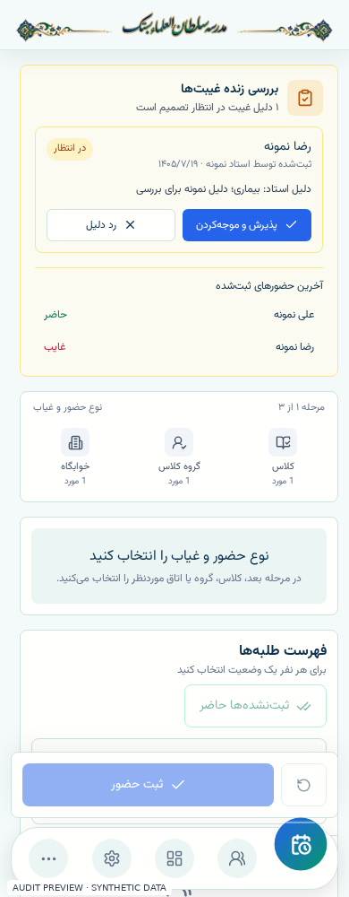